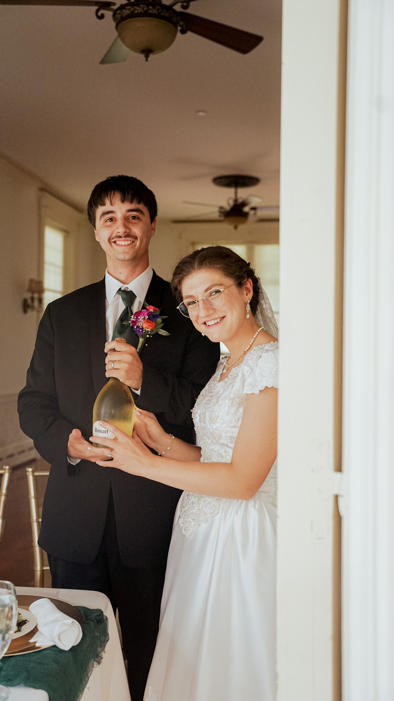
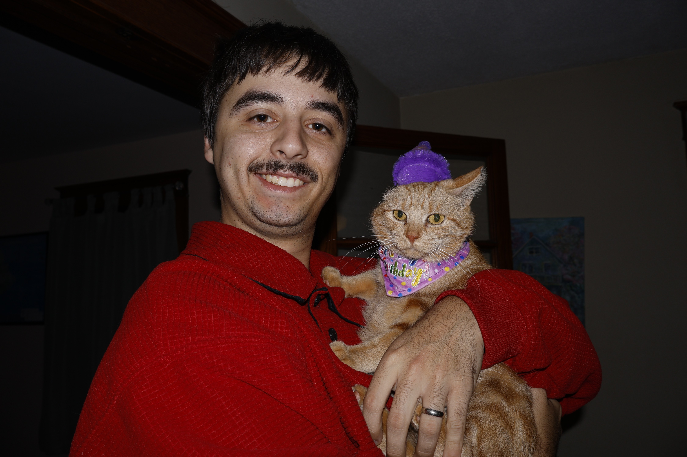
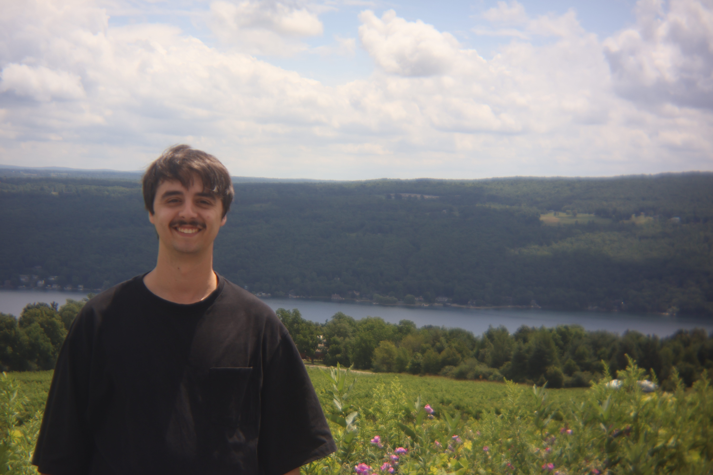

Behind The Camera
Jacob Zimmerman currently resides in Williamsport (PA) with his wife Abi and their two cats, Salty and Dahlia. Jacob has always had a camera in his hands, ever since middle school when he received a camcorder for christmas. In high school, he received his first DSLR camera. From there, he spent 10+ years (including college courses) honing his skills and becoming a powerful asset to anyone who needed creative services, including photography and videography. Throughout those years, he has practiced different styles and techniques of photography and videography, allowing him to form his own style while still being flexible enough to adapt to what the client wants. After much consideration and careful planning, he launched his business—Zimmerman's Photo and Video—in 2026.

Jacob feeding lorikeets at Bird Kingdom in Niagara Falls, Canada.
Why Should You Hire Me?
My expertise in photography combined with my ability to quickly adapt to todays trends and client's visions makes me the perfect candidate for quite literally anyone looking to get pictures done, whether that'd be drone shots for a car dealership, real estate photos, senior photos, weddings, you name it. On top of that, I am very quick with my work and quite dependable when it comes to delivering finished products that you are sure to love. I love to assist others in capturing their reality, and would love to do the same for you! If you think we would hit it off great, click the button below!

Jacob and his wife Abi on their wedding day, July 20th 2024.
Hardware and Software Used
I am using currently using the following:
- Canon R50 Mirrorless Camera
- Canon RF 100-400mm F5.6-8 IS
- Canon RF 50mm F1.8 STM
- Canon RF 18-45mm F4.5-6.3 IS STM
- Canon Speedlite EL-5
- DJI Mini 4K
- DJI Mini Mic
- SmallRig Cage for Canon EOS R50 ID 4214
- Neewer PS099EP V Mount Battery
- Adobe Lightroom
- DaVinci Resolve
- Affinity

Jacob and Dahlia on her birthday.

Jacob and Abi at Bully Hill on Keuka Lake, New York.